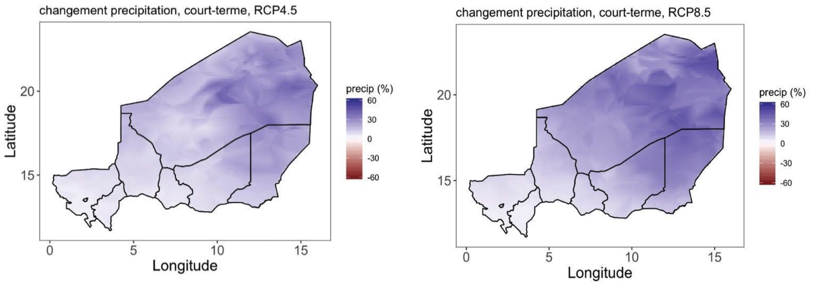
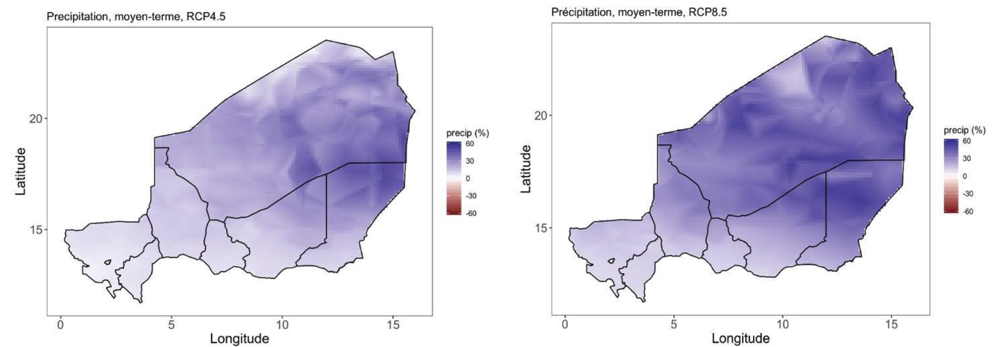
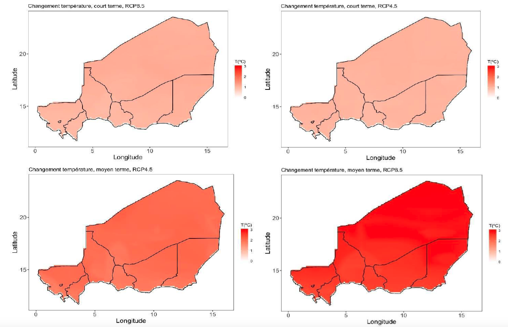
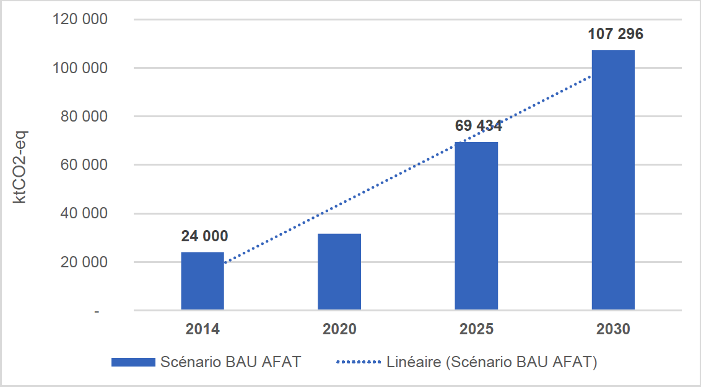
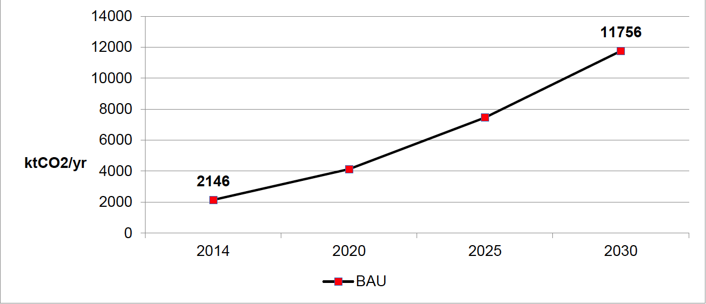
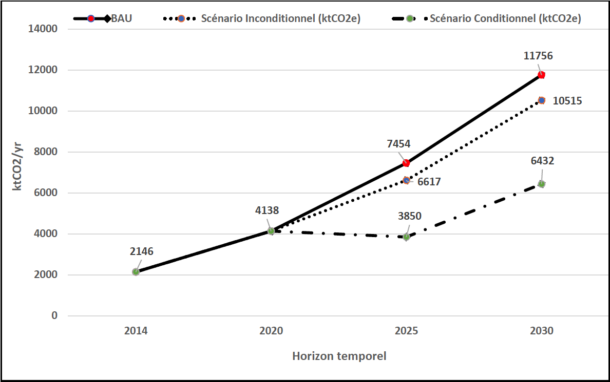
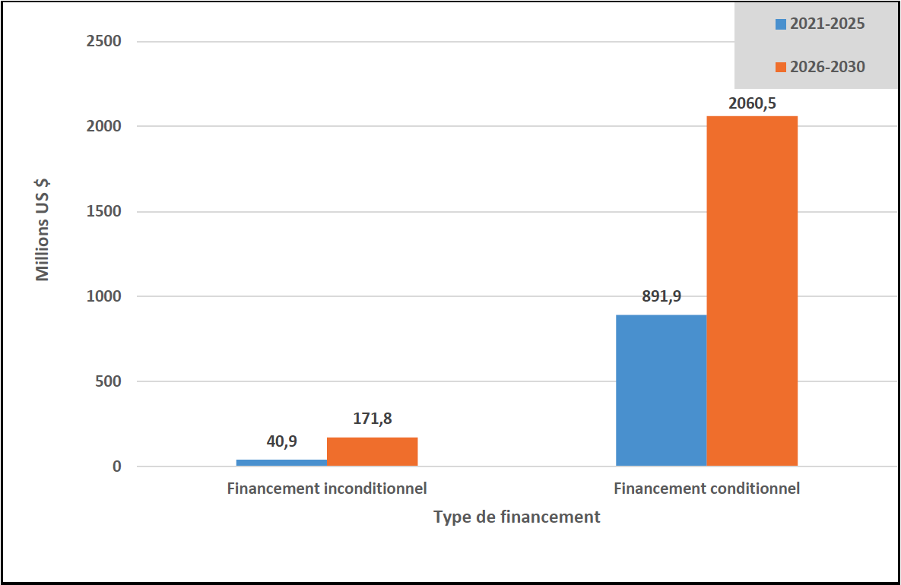
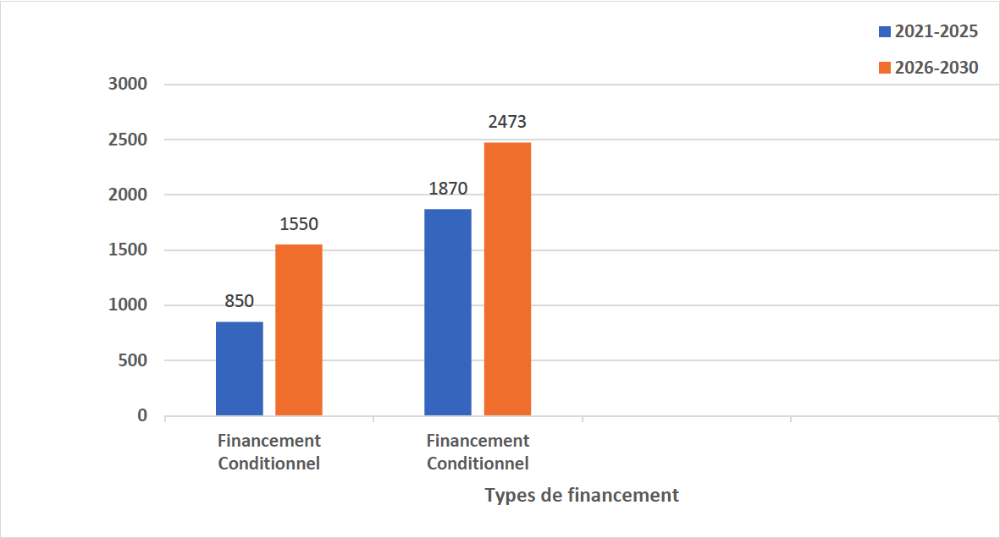

Octobre 2021
|
AFAT |
Agriculture, Foresterie et autres Affectation des Terres |
|
AIC |
Agriculture Intelligente face au Climat |
|
AIE |
Agence Internationale de l’Énergie |
|
BAU |
Business As Usual |
|
CAEP |
Climate Actions Enhancement Package |
|
CC |
Changement Climatique |
|
CEDEAO |
Communauté Economique des Etats de l’Afrique de l’Ouest |
|
CDN |
Contribution Déterminée au niveau National |
|
CCNUCC |
Convention Cadre des Nations Unies sur les Changements Climatiques |
|
CNEDD |
Conseil National de l’Environnement pour un Développement Durable |
|
CNI |
Communication Nationale Initiale |
|
CO2 |
Dioxyde de Carbone ou Gaz Carbonique |
|
COP |
Conférence des Parties |
|
CR AGHRYMET |
Centre régional de formation et d'application en agrométéorologie et en hydrologie opérationnelle |
|
CS-GDT |
Cadre Stratégique de Gestion Durable des Terres |
|
DPNE |
Document de Politique Nationale de l’Electrification |
|
EBT |
Projet Évaluation des Besoins en Technologies |
|
Ex-ACT |
Ex-Ante Carbon-balance Tool (logiciel) |
|
FA |
Fonds d’Adaptation pour les PMA |
|
FEM |
Fonds pour l’Environnement Mondial |
|
FPMA |
Fonds du Programme d’adaptation pour les petits agriculteurs |
|
FSC |
Fonds Stratégiques pour le Climat |
|
FTP |
Fonds Fiduciaires pour les Technologies Propres |
|
FVC (GCF) |
Fonds Vert pour le Climat (Green Climate Fund) |
|
GACMO |
The Greenhouse Gas Abatement Cost Model |
|
GDT |
Gestion Durable des Terres |
|
GES |
Gaz à Effet de Serre |
|
GIEC |
Groupe d’Experts intergouvernemental sur l’évolution du climat |
|
Gg éqCO2 |
Giga-grammes équivalent Gaz Carbonique |
|
HCi3N |
Haut-Commissariat-Initiative « Les Nigériens Nourrissent les Nigériens » |
|
IGES |
Inventaire des Gaz à Effet de Serre |
|
INS |
Institut National des Statistiques |
|
IRENA |
Agence Internationale de l’Energie Renouvelable |
|
I3N |
Initiative « Les Nigériens nourrissent les Nigériens » |
|
MDP |
Mécanisme de Développement Propre |
|
MESUDD |
Ministère de l'Environnement, de la Salubrité Urbaine et du Développement Durable |
|
ME/LCD |
Ministère de l'Environnement et de la Lutte contre la Désertification |
|
MNV |
Mesure, Notification, Vérification (MDP, REDD…) |
|
MRV |
Mesure, Rapportage, Vérification |
|
MW |
Megawatt |
|
MWc |
Megawatt crête |
|
NAMA |
Nationally Appropriate Mitigation Actions (Mesures d’Atténuation Appropriées au niveau National) |
|
NDC-Partnership |
Nationally Determined Contributions (Partenariat pour la Contribution Déterminée au niveau National) |
|
ODD |
Objectifs de Développement Durable |
|
ONG/AD |
Organisation non gouvernementale/Association de Développement |
|
OSC |
Organisations de la Société Civile |
|
PANA |
Programme d’Action National d’Adaptation |
|
PANEE |
Plan d’Action National d’Efficacité Energétique PANER Plan d’Action National des Energies Renouvelables PDAE Plan Directeur d’Accès à l’Electricité |
|
PDES |
Plan de Développement Économique et Social |
|
PGES |
Plan de Gestion Environnemental et Social |
|
PIB |
Produit Intérieur Brut |
|
PIC-CDN |
Plan d’Investissement Climat pour la mise en œuvre de la CDN |
|
PIC-RS |
Plan d’investissement Climat pour la Région du Sahel |
|
PMA |
Pays les Moins Avancés |
|
PNA |
Plan National d’Adaptation |
|
PNED |
Programme National d’Energie Domestique |
|
PNEDD |
Plan National de l’Environnement pour un Développement Durable |
|
PNEDD-2016 |
Politique Nationale en matière d’Environnement et de Développement Durable (2016) |
|
PNUD |
Programme des Nations Unies pour le Développement |
|
PP |
Plan de partenariat |
|
PPRC |
Programme Pilote pour la Résilience Climatique |
|
PRG |
Potentiel de Réchauffement Global |
|
PSRC |
Programme Stratégique pour la Résilience Climatique |
|
PTF |
Partenaires Techniques et Financiers |
|
QCN |
Quatrième Communication Nationale |
|
RCP |
Scénario ‘Representative Concentration Pathway’ |
|
RNA |
Régénération Naturelle Assistée |
|
SCN |
Seconde Communication Nationale |
|
SDDCI |
Stratégie de Développement Durable et de Croissance Inclusive |
|
SDDEL |
Stratégie de Développement Durable de l’Elevage |
|
SNAE |
Stratégie Nationale d’Accès à l’Electricité |
|
SNCCC |
Stratégie Nationale de Communication sur les Changements Climatiques |
|
SNPA/CVC |
Stratégie Nationale et le Plan d’Action en matière de Changements et Variabilité Climatiques |
|
SNT |
Stratégie National des Transports |
|
SPN2A |
Stratégie et Plan National d’Adaptation face aux changements climatiques dans le secteur Agricole (2020-2035) |
|
SSE |
Système de Suivi-Evaluation |
|
TCN |
Troisième Communication Nationale |
|
UTCATF |
Utilisation des Terres, Changements d’Affectation des Terres et Foresterie |
La Contribution Déterminée au niveau National (CDN) du Niger s’inscrit dans le cadre de la Convention Cadre des Nations Unies sur les Changements Climatiques (CCNUCC) et de l’Accord de Paris sur le climat. Elle s’aligne aux politiques et stratégies nationales, notamment la SDDCI- Niger 2035, le PDES-2017-2021 ainsi que les programmes/projets de gestion durable des ressources naturelles et de l’accès aux services énergétiques modernes pour tous à l’horizon 2030.
Le processus de révision de la CDN au Niger a démarré en 2020 et a prévu la soumission de la CDN révisée en 2021. Le Niger en tant que membre du NDC Partnership depuis 2018, bénéficie à ce titre d’un appui technique et financier pour la révision de sa CDN à travers l’Initiative CAEP et l’Initiative du PNUD « UNDP Climate Promise ». La révision du document et sa déclinaison en plans de mise en œuvre (de Partenariat et d’Investissement Climat) et le Système de Suivi Evaluation-SSE, etc. sont coordonnées par le Ministère de l’Environnement et de la Lutte Contre la Désertification (ME/LCD) par l’entremise du Comité National chargé de la révision et du renforcement de la CDN créé par Arrêté n°0155/ME/SU/DD/SG du 31 Août 2020.
Le SSE est composé de deux volets (Atténuation, Adaptation) dont le volet Adaptation est achevé et logé au sein du ME/LCD. Le volet Atténuation est en cours de finalisation.
La révision de la CDN a permis de i) faire un état des lieux de la mise en œuvre des engagements de 2015, ii) rehausser les ambitions du Niger en matière d’adaptation et d’atténuation sur la base de nouvelles estimations des émissions pour les secteurs clés (AFAT et Energie) et sur de nouvelles projections climatiques. L’année de référence retenue pour l’évaluation des GES est l’année 2014, également l’année de référence pour l’élaboration de la QCN. Ainsi les émissions globales du pays sont de l’ordre de 28 777,299 GgCO2eq en 2014. Les secteurs AFAT et Energie restent prioritaires pour le Niger avec des niveaux d’émissions de GES respectifs de 23 952,674 GgCO2eq soit 88,30% et de 3 833,789 GgCO2eq soit 9,30% des émissions totales pour la même année de référence de la QCN.
Des partenaires (Banque Mondiale, PNUD, FAO, IRENA, Belgique, AFD, FENU et Save The Children) appuient le Niger dans ce processus du CAEP ainsi que l’OIM et le BIT.
L’approche méthodologique choisie pour cette révision s’est voulue participative et inclusive avec tous les acteurs (Administration, institutions de recherche et de formation, OSC, secteur privé, PTF). Tous les produits des différentes études thématiques livrés dans le cadre de la révision ont été validés par le Comité National au fur et à mesure de leur élaboration.
La révision de la CDN s’est déroulée en vue de corriger les insuffisantes relevées dans la CDN de 2015, comme le manque de cadre institutionnel qui garantit l’opérationnalisation et le suivi de la mise en œuvre des objectifs fixés, le système de Communication, de partage, d’appropriation au niveau national comme dans les régions, le faible niveau de mobilisation des ressources financières notamment la part inconditionnelle des engagements, le plan de renforcement de capacités des acteurs institutionnels et du renforcement du partenariat avec les PTF.
L’enjeu du processus de révision est de prendre en charge ces insuffisances et de faire de la CDN la base de référence pour l’ensemble des interventions « Climat » du Niger et des acteurs non étatiques, le cadre solide et dynamique de gouvernance qui permet la planification, le suivi et l’évaluation des objectifs et qui pose des bases de collaboration étroites entre les institutions gouvernementales d’une part, et d’autre part les autres acteurs (PTF, secteur privé, instituions de recherche, OSC).
Au terme de cet exercice, la CDN révisée ambitionne des réductions ‘inconditionnelles’ et ‘conditionnelles’ selon le scénario de référence de base BAU pour :
le secteur AFAT : Réductions Inconditionnelles : 4,50% (BAU 2025) et 12,57% (BAU 2030) et Réductions Conditionnelles : 14,60% (BAU-2025) et 22,75% (BAU 2030)
le secteur Energie : Réduction Inconditionnelles : 11,20% (BAU-2025) et 10,60% (BAU- 2030) et Réductions Conditionnelles : 48% (BAU-2025) et 45% (BAU-2030).
La mise en œuvre de la Contribution du Niger est estimée, pour la période 2021-2030, à un coût total de 9,9081 Milliards USD dont pour :
l’adaptation : 6,743 Milliards USD dont 2,40 Milliards USD (36%) en ‘Inconditionnel’ et 4,343 Milliards USD (64%) en ‘Conditionnel’ ;
l’atténuation : 3,1647 Milliards dont 0,2127 Milliards USD (6,72%) en ‘Inconditionnel’ et 2,9524 Milliards USD (93,28%) en ‘Conditionnel’
Le coût total ‘Inconditionnel’ et ‘Conditionnel de la CDN s’élève respectivement à 2,6127 Milliards USD (26,4%) et à 7,2954 Milliards USD (73,60%).
L’opérationnalisation de la nouvelle CDN requiert d’importants moyens financiers, technologiques et logistiques ainsi que des renforcements de capacités humaines à condition de mobiliser les appuis de la communauté internationale et de la Finance Climatique afin de permettre à l’atteinte des objectifs de développement économique et social, de la CDN et de l’Accord de Paris.
La mise à jour de la CDN sur la période 2021-2030, présente la feuille de route du Niger contribuant à l’atteinte de l’objectif fixé par l’Accord de Paris sur le Climat notamment le maintien de la hausse de température en dessous de 2oC voire 1,5 oC à l’horizon 2050.
Les quatre Communications Nationales produites par le Niger (CNI-1990, SCN-2000, TCN-2008, QCN-2014), et les documents de PANA et de NAMA font état des dispositions prises en matière des émissions de GES et d’adaptation au changement climatique.
Dans le cadre de la mise en œuvre de l’Accord de Paris, le Niger se fixe comme objectif de contribuer à la réduction des émissions globales des Gaz à Effet de Serre (objectif 2°C voire 1,5oC à l’horizon 2050) tout en poursuivant son développement socioéconomique sobre en carbone et résilient aux effets néfastes de changements climatiques. Aussi, la CDN sera mise en œuvre pour contribuer aux objectifs nationaux de développement suivants :
Lutter contre la pauvreté ;
Assurer la sécurité alimentaire et nutritionnelle des nigériens et des nigériennes ;
Promouvoir la gestion durable des ressources naturelles et l’utilisation massive des Energies Renouvelables ;
Renforcer la résilience des écosystèmes et des communautés.
La CDN se veut un outil stratégique et d’engagement du Niger pour la mise en œuvre de l’Accord de Paris par des actions ciblées dans les secteurs prioritaires (AFAT, Energie). Cette priorité est confirmée par les inventaires nationaux de GES effectués à l’occasion des Communications Nationales. Aussi, toutes les études ont confirmé une forte exposition du Niger et de sa vulnérabilité au changement climatique. Malgré cette situation, le Niger entend contribuer à l’effort mondial à travers sa CDN actualisée par des mesures accrues d’atténuation et d’adaptation à co- bénéfices forts en matière de séquestration de carbone et de réduction des émissions de GES.
La présente CDN s’aligne aux politiques et stratégies nationales (SDDCI-2035, PDES, 2017- 2021, i3N, CS-GDT,2014-2029, SPN2A, SNPA-CVC, SNAE, SNT) en vue d’amorcer une transition vers une économie sobre en carbone et plus résiliente aux impacts du dérèglement climatique. Cela est possible grâce aux contributions financières adéquates des Partenaires Techniques et Financiers mobilisés à travers les mécanismes financiers dédiés au climat et en faveur des PMA et des pays en développement.
Depuis 2019, à l’instar des autres pays parties prenantes à la Convention Cadre des Nations Unies sur les Changements Climatiques, le Niger révise et renforce sa CDN à travers l’initiative ‘’Climate Actions Enhancement Package’’(CAEP) du Partenariat des CDN. Cette révision est sous le leadership du ministère en charge de l’environnement. Ce dernier est assisté dans cette tâche par les points focaux des secteurs AFAT et Energie, les institutions de recherche et de formation et les Organisations de la société civile fédérés par le comité national de la révision et du renforcement de la CDN.
La révision de la CDN ambitionne de capitaliser les acquis de la mise en œuvre de la première CDN et de combler les insuffisances grâce à l’appui multiforme des partenaires membres de NDC Partnership qui financent actuellement des études relatives à la gouvernance et à la mise en œuvre opérationnelle de la CDN. Les livrables découlant de ces études ont été validés par deux (2) instances à savoir le sous-comité technique et le Comité National chargé de la révision et du renforcement de la CDN. Les documents validés ont servi de base à la formulation de la CDN révisée qui sera soumise à la CCNUCC par le Gouvernement du Niger en prélude à la COP26 sur le Climat en novembre 2021 à Glasgow en Ecosse.
La stratégie du Niger en la matière repose sur la prise en compte dans les politiques et stratégies de la dimension Climat et des priorités nationales de développement telles que la lutte contre la pauvreté, l’insécurité alimentaire et nutritionnelle, l’intensification de la pénétration des énergies nouvelles et renouvelables, et l’efficacité énergétique.
En outre, le Niger a pris l’option de prendre en compte dans ses politiques, stratégies et CDN, la dimension migration, le genre et l’inclusion sociale et les Initiatives Africaines en lien avec le Climat y compris celle relative à la Sécurité, Stabilité et Soutenabilité (3S).
Aussi, le secteur privé au Niger s’engage à consentir des investissements pour l’atteinte des objectifs de la CDN et de l’Accord de Paris à travers l’opérationnalisation effective de la Responsabilité Sociétale des Entreprises (RSE) et dans la Vision de la SDDCI-Niger, 2035. Pour ce faire, le secteur privé opte pour le renforcement de capacités de ses membres en matière de CC et de la finance climatique, la promotion et la vulgarisation des technologies innovantes au service de l'action climatique et travailler pour la mobilisation et l’accès aux financements climatiques.
Enfin, la CDN s’aligne sur l’option commune africaine de négociations sur le Climat et de financements des programmes transnationaux structurants de résilience des populations et des écosystèmes (Commission Climat pour la Région du Sahel -17 pays membres).
|
Circonstances nationales |
Population : 23,3 Millions (80% rural, 20% urbain), (INS, 2019). Taux de croissance démographique : 3,9% (RGPH/2011). PIB faible, de 12,9 Milliards USD en 2018, soit 553,65 USD/hab, Croissance économique : +7,2%, (Banque Mondiale, 2018). Le secteur agricole apporte 80% des revenus à la population. Le secteur de l’agriculture est très dépendant des aléas climatiques au Niger. Le cheptel est estimé à 52 693 034 de têtes toutes espèces confondues soit 20 876 240 UBT, (DS/MAGEL2020). L’agriculture est le principal secteur d’activité (69% d’hommes et 31% de femmes) 36% des femmes possèdent au moins une parcelle de terres (contre 55% pour les hommes) (ONU-Femmes, 2017). Les CC vont entrainer une modification de l’aire des cultures pluviales, une baisse de 9 à 15% des rendements en grains du mil non photopériodique, une baisse de 18 à 23% des rendements en grains du sorgho, une augmentation de 21% à 25% des rendements en grains du mil photopériodique, une augmentation de 17% à 18% des rendements en grains du maïs (Lona et al., 2019 in SPN2A, 2020). |
|
Pertes et dommages : |
Pertes moyennes dues à la sécheresse : plus de 70 Millions USD (World Bank. Climate risk assessment, Niger, 2012). Dommages dus aux inondations sur la période 1990-2020 évalués à 3 115 290 personnes et 7 100 localités touchées avec plus de 225 000 maisons détruites et des pertes d'environ 205 000 hectares de cultures et 46 540 UBT (SAP, 2021). |
|
Objectif global |
Le Niger se fixe comme objectif de contribuer à la réduction des émissions globales des Gaz à Effet de Serre (objectif 2°C voire 1,5 o C à l’horizon 2050) tout en poursuivant son développement socioéconomique sobre en carbone et résilient aux effets néfastes de changements climatiques. |
|
Objectifs nationaux : |
|
|
Émissions pour l’année de référence : |
28 777,299 GgCO2eq (QCN-2014) dont le Secteur AFAT avec 23 952,674 GgCO2eq (88,30%), Energie avec 3 833,789 GgCO2eq (9,30%), Déchets avec 945,758 GgCO2eq (2,29%) et Procédés Industriels et Utilisation des Produits (PIUP) avec 45,078 GgCO2eq (0,11%). |
|
Couverture et étendue de de la contribution : |
|
|
Contribution : |
|
|
Périodes : 2021-2030 |
|
|
Réduction des émissions de GES d’ici à 2030 : |
AFAT
ENERGIE
|
|
Mesures d’Atténuation des émissions de GES à l’horizon 2030 : |
AFAT (Agriculture, Foresterie et Autres Utilisations des Terres):
Energie :
|
|
Procédé de mise en œuvre : |
|
|
Hypothèses et méthodologie : |
|
|
Mesures d’Adaptation au changement climatique : |
|
|
Besoins en financements sur 10 ans, pour la période 2021-2030 : |
Coût total de la CDN sur 10 ans : 9,9077 Milliards USD (990,77 millions USD/an), dont :
|
|
Caractère ambitieux et équitable : |
|
Le Niger est un pays d’Afrique de l’Ouest qui se caractérise par des conditions climatiques particulièrement drastiques dues au fait que 2/3 de sa superficie (1 267 000 km²) sont localisés en zone saharienne et 1/3 en zone soudanienne et sahélienne. Il est tributaire des aléas climatiques avec une pluviométrie à variabilité interannuelle, spatiale et temporelle importante. Sa population est estimée en 2015 à 17,7 Millions d’habitants, pour un taux de croissance démographique (3,9%/an) (INS, 2015) et 23,3 Millions habitants en 2019, dont la grande partie tire son revenu de l’exploitation des ressources naturelles (MP, 2020a). Ainsi, en 2019 les jeunes représentent 51,6 % de moins de 15 ans. L’indice synthétique de fécondité qui traduit le nombre moyen d’enfants nés vivants par femme (de 15-49 ans) est de 7,6 pour la même année.
Le PIB est faible (12,9 Milliards USD en 2018), soit 553,65 USD/hab. et une croissance économique de +7,2%, [Banque Mondiale, 2018]. Ce PIB était de 6,3 Milliards USD en 2015, soit 413 USD/hab, avec un IDH de 0,374 (PNUD, 2016). La production du secteur primaire est dominée par le secteur agro-sylvo-pastoral avec 37% du PIB et 80% des emplois (INS, 2018) varie beaucoup d’une année à l’autre.
A l’instar des autres pays d’Afrique de l’Ouest, le Niger est très vulnérable au changement climatique, caractérisé par une forte variabilité climatique et des précipitations qui entraînent des déficits pluviométriques récurrents. Ces déficits se traduisent par des sécheresses répétitives et cycliques très néfastes. Les phénomènes de la désertification et de la dégradation des ressources naturelles et des terres constituent depuis des décennies une préoccupation majeure pour le développement économique et social du pays. Face à cette situation, l’Etat continue à développer des initiatives et à conduire des actions de nature à préserver la durabilité des bases productives, ainsi que des stratégies appropriées d’atténuation et d’adaptation.
Ces perturbations de variabilités et de changement climatiques augmentent considérablement l'insécurité alimentaire et nutritionnelle, provoquent des migrations et l’exode rural des populations, des conflits entre les producteurs ruraux autour de la gestion et de l’accès aux ressources naturelles, perturbent les régimes des cours d'eau et la disponibilité de la ressource eau, diminuent le rendement et de la production des cultures, augmentent la persistance des conflits fonciers, accentuent l’intensité des maladies climato-sensibles, augmentent la dégradation des terres, etc.
Le Niger a soumis trois CN pour le besoin de la mise en œuvre de la Convention Cadre des Nations Unies sur les Changements Climatiques (CCNUCC) et de l’Accord de Paris sur le Climat. La quatrième communication est en cours de finalisation.
Les quatre communications nationales (CNI-1990, SCN-2000, TCN-2008 et QCN-2014) montrent une tendance à l’augmentation des émissions nationales des GES notamment dans les deux secteurs prioritaires tout en gardant la même proportion.
Les valeurs des émissions de Gaz à effet de Serre (GES) sont récapitulées dans le tableau ci- après pour les communications nationales (CNI-1990, SCN-2000 et TCN-2008, QCN-2014).
Tableau 1 : Répartition des émissions par secteur selon les Communications Nationales
|
Année/Emissions annuelles |
Energie |
Agriculture/ Elevage |
UTCATF |
Procédés industriels |
Déchets |
Total (GgCO2eq) |
|
CNI-1990 |
928,47 |
1839,55 |
6106,26 |
9,56 |
28,22 |
9000 |
|
SCN-2000 |
2622 |
10656 |
17132 |
18 |
373 |
30801 |
|
TCN-2008 |
1766 |
12675 |
21010 |
34 |
415 |
35900 |
|
QCN-2014 |
3833,789 |
23952,674 |
45,078 |
945,758 |
28777,299 |
|
Sources : (CNEDD, 2020)
Les résultats de l’inventaire de GES pour la QCN (année de référence 2014) ont établi les émissions/absorptions agrégées pour les gaz directs CO2 : - 8 192,006GgCO2eq ; CH4 : 17585,35 GgCO2eq et N2O : 19 384,006 GgCO2eq. Les émissions de CO2 sont évaluées à 2 217,741 GgCO2eq contre une absorption de -10 434,735 GgCO2eq, soit une capacité de séquestration de CO2 de l’ordre de - 8 192,006 GgCO2eq. D’où, les émissions/absorptions globales des principaux gaz directs (CO2, CH4, N2O) estimées à 28 777,299 GgCO2eq.
A titre d’exemple pour l’année de référence 2014, la décomposition des émissions entre les différents secteurs est présentée comme suit :
Tableau 2 : Répartition des émissions par secteur selon la Quatrième Communication Nationale (2014)
|
Année de référence (2014) |
Émissions (GgCO2eq) |
Part des émissions (%) |
|
AFAT |
23952,674 |
88,30 |
|
Energie |
3833,789 |
9,30 |
|
Déchets |
945,758 |
2,29 |
|
Procédés Industriels et Utilisation des Produits |
45,078 |
0,11 |
Sources : (CNEDD, 2020)
Le climat du Niger est de type tropical semi-aride, caractérisé par deux saisons : une saison sèche allant d’octobre à mai et une saison pluvieuse allant de juin à septembre.
Pendant la saison sèche, la température moyenne varie entre 18,1 et 33,1 °C. Les records de températures observées sont de – 2,4°C (observé le 13 janvier 1995 à Bilma) pour les températures minimales et de 49,5 °C (observé le 7 septembre 1978 à Diffa) pour les températures maximales (PANA, Niger 2006).
Pendant la saison des pluies, la température moyenne varie entre 28,1 et 31,7 °C. Le régime pluviométrique est unimodal avec un maximum de précipitations survenant autour du mois d’août. En année normale, la pluviométrie permet la recharge des nappes, la formation des plans d’eau et le développement du couvert végétal.
Depuis les années 50, le climat du Niger a connu 3 cycles pluviométriques distincts, communs à l’ensemble du Sahel :
entre les années 1950 et 1970, le Niger a bénéficié d’un cycle d’années humides ;
entre les années 1970 et 1990, le Niger a été confronté à un cycle de sécheresses majeures, marqué par des épisodes particulièrement secs en 1970 et en 1984, comme dans le reste du Sahel ;
dès le début des années 1990, des conditions pluviométriques bien meilleures se sont réinstallées sur cette région (Ali et al., 2008, 2010), s’accompagnant toutefois d’une hausse de la variabilité interannuelle des précipitations.
Au regard de cette situation, le Niger est confronté aux aléas climatiques extrêmes qui deviennent plus fréquents et violents (sécheresses récurrentes et successives, les inondations, les vents violents, les températures extrêmes et les tempêtes de sable ou de poussières ; la variabilité des pluies s’accroit et sa mauvaise répartition dans le temps et dans l’espace ; la persistance d’autres facteurs indirects comme les épidémies (méningite, choléra), les ennemis de cultures (chenilles mineuses, insectes floricoles, pucerons, oiseaux granivores), les maladies pour le cheptel (épizooties), les feux de brousse, etc.
La figure 1 ci-dessous représente l’évolution simulée des cumuls moyens de précipitations durant la saison des pluies (JJAS) sur le court terme (en haut) et sur le moyen terme (en bas), pour les scénarios RCP4.5 (à gauche) et RCP 8.5 (à droite).
Les modèles prévoient une tendance générale à la hausse des cumuls de précipitations durant la saison des pluies (JJAS) par rapport à la référence climatologique 1981-2010.
Ces conclusions sont cohérentes avec les tendances obtenues par différents auteurs.
D’après les modèles, la hausse de la pluviométrie devrait être plus importante au Nord et à l’Est du pays. La hausse de la pluviométrie devrait être plus importante sur le moyen terme comparé au court terme, et d’autant plus importante que l’on se situe dans un scénario pessimiste d’augmentation de gaz à effets de serre (RCP 8.5 comparé au RCP 4.5).


Figure 1 : Simulation de l’évolution des cumuls moyens de précipitations durant la saison des pluies (JJAS) pour le court et le moyen terme, comparés à la période de référence 1981- 2010. Ces résultats sont la médiane des simulations effectuées avec 29 modèles globaux de l’expérience d’intercomparaison de modèles globaux (CMIP5) pour les scénarios RCP 4.5 et RCP 8.5. Les valeurs représentées correspondent au pourcentage de variation par rapport aux cumul de précipitation de référence.
Source : MESUDD, 2020
La figure 2 ci-dessous représente l’évolution simulée des températures durant la saison des pluies (JJAS) sur le court terme (en haut) et le moyen terme (en bas) pour les scénarios RCP 4.5 (à gauche) et RCP 8.5 (à droite).
Les modèles prévoient des hausses de températures durant la saison des pluies (JJAS) dans toutes les localités du Niger de l’ordre de 1°C à court terme (horizon 2030), contre 1,5 à 3°C sur le moyen terme (horizon 2050).
La hausse des températures moyennes projetées est significativement plus importante dans le scénario RCP 8.5 que dans le scénario RCP 4.5., ce qui est logique.
Les modèles indiquent des augmentations de températures moyennes de surface légèrement plus importantes dans les régions situées les plus au Nord, par rapport au Sud et à l’Ouest du Niger.
Les conclusions obtenues sont cohérentes avec les tendances déjà relevées par plusieurs auteurs.

Figure 2 : Différences de températures moyennes de surface au Niger durant la saison des pluies (JJAS), simulées sur le court terme et le moyen terme par comparaison avec la période de référence 1981- 2010. Ces résultats sont la médiane des simulations effectuées avec 29 modèles globaux de l’expérience d’intercomparaison de modèles globaux (CMIP5) pour les scénarios RCP 4.5 et RCP 8.5.
Source : MESUDD, 2020
Les modèles tendent à montrer une tendance à la diminution du nombre de jours pluvieux pendant la période JJAS sur l’ensemble du Niger. La diminution du nombre de jours pluvieux est plus importante à moyen terme comparée au court terme, mais similaire entre les scénarios RCP 4.5 et 8.5.
Au Niger, la conjonction d’une hausse des cumuls de précipitation (Figure 2) et d’une diminution du nombre de jours pluvieux sur la saison JJAS (figures 1) indique une tendance à l’intensification des pluies et à l’accroissement de la durée des épisodes secs durant la saison agricole.
L’économie nationale repose essentiellement sur le secteur agro-sylvo-pastoral et halieutique qui demeure la source principale d’emplois et de revenus pour plus de 80% de la population. Ce secteur reste pourtant tributaire des aléas climatiques.
En termes d’impact sur l’agriculture, les attaques du criquet pèlerin et des autres ravageurs des cultures ont endommagé plus de 1,6 millions d’hectares. Les aléas (sécheresse, feux de brousse, inondations) comptent ensemble pour plus de 1 million d’hectares. Plus de 17 millions de têtes de bétail ont également péri durant les événements entre 2001 et 2014. Les impacts économiques, les sécheresses et les inondations ont contribué pour 96% des pertes économiques. Les valeurs des dommages et pertes causés aux secteurs de l’agriculture et du logement vont au-delà de 3,2 Milliards USD (PNUD, 2017 in CNEDD, 2020).
Les changements climatiques futurs vont entraîner une diminution de 10 à 20% de rendements de la plupart des cultures pluviales à l’horizon 2050, par rapport à l’année 2020 (MESUDD/SPN2A, 2020).
Les simulations les plus récentes montrent que les CC devraient entraîner à l’horizon 2050, par comparaison aux rendements moyens sur la période 1981-2010 : une baisse de 9 à 15% des rendements en grains du mil non photopériodique ; une baisse de 18 à 23% des rendements en grains du sorgho ; une augmentation de 21 à 25% des rendements en grains du mil photopériodique et une augmentation de 17 à 18% des rendements en grains de maïs (MESUDD/SPN2A, 2020).
Tous ces évènements extrêmes climatiques constituent une entrave à l’atteinte des objectifs de la lutte contre la pauvreté et pour le développement économique et social tels que déclinés dans les politiques et stratégies (SDDCI-2035, PDES, Initiative 3N, PNEDD-2016, SPN2A, etc.). Cette situation constitue un défi de taille à relever.
Les émissions de GES du Niger sont de 28 777,299 GgCO2eq. (QCN-2014) et seulement 0,0001% des émissions mondiales de CO2. Le Niger n’appartient pas à l’Annexe I de la CCNUCC, donc n’a pas d’obligation chiffrée en termes d’atténuation. Cependant, malgré ses besoins importants pour développer son économie et la nécessité de sortir une grande partie de sa population de la pauvreté, l’ambition du Niger est de limiter ses émissions à 1,61tCO2eq/hab. à l’horizon 2030, dans le cadre de l’objectif conditionnel. La CDN est équitable au regard des capacités nationales, du croît démographique, de la situation géographique du Niger et de l’aridité de son climat, et le degré de vulnérabilité de son économie qui dépend de la pluviométrie. La révision de la CDN met le Niger sur une trajectoire de développement sobre en carbone pour assurer la résilience des populations, des écosystèmes, des bases productives et de ses infrastructures de développement.
Le Niger continue, malgré cette période de pandémie à COVID-19 et ces décennies marquées par l’insécurité dans l’espace du Sahara et du Sahel et le déplacement des populations, d’appliquer les mesures pour s’adapter et lutter contre les effets néfastes du dérèglement climatique. Cette situation annihile les efforts du Gouvernement et ralentit les activités socioéconomiques dans le pays.
Malgré, la situation de vulnérabilité du Niger et son appartenance au groupe des PMA, la CDN prévoit une réduction des émissions de GES durant la période 2021-2030 dans les deux secteurs (AFAT, Energie) suivants les projections des émissions projetées pour les BAU-2025 et BAU- 2030 et selon un scénario de référence basé sur des hypothèses. Les mesures d’atténuation se répartissent en contributions inconditionnelles et conditionnelles.
L’adaptation est primordiale pour le pays. Pour participer aux efforts d’atténuation de la communauté internationale, le Niger privilégie les actions d’adaptation à co-bénéfices forts en faveur de l’atténuation.
L’atténuation dans le secteur de l’Energie nécessite des investissements importants pour faciliter l’accès à une énergie bon marché, durable et propre.
Tout en mobilisant ses ressources nationales, le Niger souhaite utiliser la Finance Climat Internationale et d’autres mécanismes financiers internationaux et bénéficier de l’appui de la coopération internationale pour atteindre les objectifs.
2.1.1. Secteur AFAT
Le scénario BAU du secteur AFAT a été défini à travers l’outil EX-ACT (EX-Ante Carbon-balance Tool) de la FAO en prenant en compte les tendances de développement actuelles du secteur AFAT et les activités humaines futures.

Graphique 1 : Tendance des émissions du secteur AFAT sur la période 2014-2030
2.1.2. Secteur de l’Energie
Le scénario BAU a été défini à travers l’outil « The Greenhouse Gas Abatement Cost Model (GACMO) » sur la base du bilan énergétique de l’année de référence de l’inventaire des GES de 2014, de la croissance de la population, du PIB, de la demande d’énergie des différents secteurs d’activités et des émissions du secteur de l’Energie. Les résultats du scénario BAU sur la période 2014-2030, montrent une tendance à l’augmentation des émissions. En effet, les émissions du CO2 du secteur estimées à 2 146 ktCO2 en 2014 passeront à 7 454 ktCO2 en 2025 et 11 756 ktCO2 en 2030. Comme le montre la figure 4, “sans les mesures d’atténuation”, la trajectoire de développement du secteur serait une source d’émissions des GES.

Graphique 2 : Tendance des émissions du secteur de l’énergie sur la période 2014-2030
2.2.1. Secteur AFAT
Les technologies identifiées sont des mesures à co-bénéfice. D’une manière globale, leur mise en œuvre font l’objet de projets/programmes en cours ou planifiés. Ainsi sont retenues pour la CDN révisée : Plantations d’espèces à usages multiples : 750 000 ; Promotion de régénération naturelle assistée (RNA) : 913 932 ha ; Aménagement des terres pour les cultures irriguées ou de décrues : 424 000 ha ; Haies vives et brises vents : 145 000 km ; Aménagement et sécurisation des enclaves pastorales, aires de pâturage et aires de repos : 455 848 ha ; Aménagement et matérialisation et couloirs de passage : 279 702 ha ; Restauration des terres pastorales dégradées : 112 500 ha ; Foresterie privée : 75 000 ha : développement de fermes laitières en zéro pâturage (stabulation permanente) : 258 fermes ; intensification des systèmes d’élevage basés sur l’embouche bovine : 1 500 fermes ; intensification des systèmes d’élevage basés sur l’embouche ovine : 3 000 fermes ; Programme « un village un bois » : 12 500 ha ; Fixation de dunes vives : 10 053 ha ; Réhabilitation des forêts classées dégradées : 10 000 ha ; Gestion des intrants : 10 822 tonnes ; Lutte contre le déboisement (défrichement) et les feux de brousse (pare- feu) : 7 500 ha ; Culture fourragère : 2 000 ha. Mises en œuvre sur une superficie de 4 838 899,5 ha (soit 4% de la superficie du pays), ces technologies permettront au Niger de séquestre 4,2 tonnes de CO2-eq / ha/an.
2.2.2. Secteur de l’Energie
Les options d’atténuation inconditionnelles et conditionnelles dans le secteur de l’Energie concernent la proportion de l’efficacité énergétique dans les secteurs résidentiel et tertiaire ; la réduction des pertes de transport et distribution d’électricité ; le développement des énergies renouvelables et l’amélioration de l’efficacité énergétique dans le secteur de transport. Les cibles retenues sont consignées dans le tableau 3.
Tableau 3 : Mesures et technologies d’atténuation inconditionnelles et conditionnelles dans le secteur de l’Energie
|
Mesures d’atténuation |
Technologies |
Unités |
Cibles conditionnelles à l’horizon 2030 |
Cibles inconditionnelles à l’horizon 2030 |
|
Promotion de l’efficacité énergétique dans les secteurs résidentiel et tertiaire |
Éclairage efficace avec les ampoules fluocompactes |
Lampes |
841 000 |
250 000 |
|
Éclairage efficace avec LED |
Lampes |
295 000 |
88 000 |
|
|
Foyers à bois efficaces |
Foyers |
942 000 |
300 000 |
|
|
Foyers à charbon de bois efficaces |
Foyers |
520 000 |
140 000 |
|
|
Foyers au GPL |
Foyers |
520 000 |
500 00 |
|
|
Éclairage de bureau efficace avec des ampoules fluocompactes |
Lampes |
253 000 |
80 000 |
|
|
Éclairage de bureau efficace avec LED |
Lampes |
310 000 |
90 000 |
|
|
Éclairage public efficace |
Lampes |
140 000 |
70 000 |
|
|
Lampes solaires à LED |
Lampes |
71 000 |
40 000 |
|
|
Réfrigérateurs efficaces |
Réfrigérateurs |
283 000 |
113 000 |
|
|
Réfrigérateurs d’hôtel efficaces |
Réfrigérateurs |
71 000 |
15 000 |
|
|
Lampadaires solaires |
Lampes |
40 000 |
8 000 |
|
|
Réduction des pertes de transport et distribution d’électricité |
Nouvelle centrale à charbon à haut rendement |
MW |
200 |
0 |
|
Réseaux électriques efficaces (pertes évitées) |
GWh |
52 |
0 |
|
|
Développement des énergies renouvelables |
Hydroélectricité connectée au réseau principal |
MW |
130 |
0 |
|
Production électrique à partir de bagasse |
MW |
12 |
0 |
|
|
PV solaires, grand réseau |
MWc |
402 |
0 |
|
|
Mini-réseau solaire/diesel |
MWc |
24 |
0 |
|
|
PV solaires, petit réseau isolé, 100% solaire |
MWc |
100 |
0 |
|
|
Eolienne |
MW |
50 |
0 |
|
|
Amélioration de l’efficacité énergétique dans le secteur du transport |
Voitures à essence plus efficaces |
Voitures |
0 |
8000 |
|
Voitures diesel plus efficaces |
Voitures |
0 |
5000 |
|
|
Restriction à l'importation de voitures d'occasion |
Voitures |
0 |
35 000 |
L’impact de ces mesures sur la réduction des émissions a été évalué à travers l’outil GACMO. Les résultats montrent une réduction importante des émissions du secteur. En effet, sans les mesures, les émissions passeront à 11 766 ktCO2 en 2030 et avec les mesures, ces émissions seront de 6 432 ktCO2 soit une réduction de 5 324 ktCO2. La figure 5 ci-après présente l’impact des mesures des réductions (Inconditionnelles et Conditionnelles) par rapport à BAU-2025 et BAU-2030.

Graphique 3 : Réduction « inconditionnelle » et « conditionnelle » par rapport à BAU (2025- 2030)
L’évaluation de la vulnérabilité des secteurs AFAT et Energie a permis d’identifier les options d’adaptation suivantes : i) Promotion de l’Agriculture Intelligente face au Climat ; ii) Valorisation des données météorologiques par les producteurs ; iii) Développement de la gestion durable des terres et des eaux ; iv) Renforcement de la gestion participative et numérisée des massifs forestiers ; v) Elaboration et mise en œuvre d’un plan décennal de reboisement ; vi) Développement de la Foresterie urbaine et péri-urbaine ; vii) Subventions des kits d’utilisation des énergies fossiles et solaires ; et viii) Développement de Partenariat Public Privé (PPP) pour la mise en valeur des énergies nouvelles et renouvelables.
Les mesures d’adaptation dans le secteur AFAT portent sur l’amélioration de la résilience des sous-secteurs de l’agriculture, de l’élevage, de la foresterie, des ressources en eau, halieutiques et fauniques ainsi que de la santé des populations. En effet, l’accent est mis sur la promotion des techniques d’AIC prenant en compte la valorisation de l’information climatique, l’alerte précoce, la gestion des risques et de catastrophes, le genre et l’inclusion sociale, l’assurance indicielle agricole climatique et l’intégration de la dimension « changement climatique » dans la planification locale, régionale et nationale.
Les mesures d’atténuation prévues, dans le secteur AFAT, sont relatives à la mise à l’échelle des bonnes pratiques de gestion durable des terres (GDT) et des eaux sur l’ensemble des zones agroécologiques en vue d’augmenter la résilience des écosystèmes et des ménages, et de séquestrer le carbone.
Pour le secteur de l’Energie, les mesures visent à faciliter l’accès à une énergie bon marché, durable et propre ainsi que l’accès aux services énergétiques modernes pour tous en 2030. Les options d’atténuation concernent la gestion du sous-secteur ‘Résidentiel’(ménages), par l’électrification rurale, l’économie du bois-énergie et sa substitution par d’autres combustibles plus modernes (gaz butane, biocarburants, solaire) ; le sous-secteur ‘Transport’ par la baisse de ses consommations spécifiques ; la gestion des secteurs ‘Demande, Transformation et Vulgarisation des Énergies Renouvelables’ par l’amélioration de l’efficacité énergétique des filières et la promotion du solaire photovoltaïque pour le pompage d’eau, la santé et l’électrification.
Le tableau 4 suivant reflète les impacts et vulnérabilités dans les sous-secteurs de l’AFAT d’une part et d’autre part les mesures d’adaptation pour faire face à ces impacts.
Tableau 4 : Impacts et mesures d’adaptation dans les sous-secteurs d’AFAT
|
Sous-secteurs |
Impacts et vulnérabilités |
Mesures et actions |
|
Agriculture |
|
|
|
Foresterie |
|
|
|
Elevage |
|
|
|
Ressources en eau |
|
|
(ME/LCD, 2021)
La mise en œuvre intersectorielle de la CDN nécessite la mobilisation des acteurs étatiques relevant des ministères sectoriels et des institutions de recherche et de formation dont les universités publiques, le secteur privé et les OSC.
La mise en œuvre de la CDN requiert également un mode de gouvernance assurant les fonctions d’orientation/décisions, de pilotage, de concertation et de mise en œuvre. Cette gouvernance sera fondée sur un leadership solide de communication, d’échanges ainsi que l’implication et l’adhésion des parties prenantes suscitées. Il s’avère indispensable de créer une bonne synergie institutionnelle et l'appropriation du processus par l’ensemble des acteurs.
Le Secrétariat Permanant (SP), organe exécutif de mise en œuvre de la CDN, assure la coordination et doté de ressources humaines qualifiées et matérielles adéquates et d’une autonomie de gestion. Il sera chargé spécifiquement de la coordination et du suivi de la mise en œuvre de la CDN avec des missions et attributions bien définies pour éviter tout conflit de compétence avec les autres structures. La mise en œuvre des activités de la CDN relèvera de la compétence des administrations sectorielles concernées, les ONG/AD et le secteur privé.
Un comité de pilotage sera mis en place pour donner des orientations au SP à mettre en œuvre les décisions. Le comité de suivi de la mise en œuvre de la CDN tel qu’il existe actuellement dans sa composition (administrations sectorielles, recherche et formation, OSC, secteur privé, PTF) continuera ses missions.
Le montant global (investissement inconditionnel et conditionnel) de mise en œuvre des technologies d’atténuation identifiées est évalué à 3,1651 Milliards USD pour la période 2021- 2030 en deux phases de cinq ans.
En effet, les coûts des options inconditionnelles et conditionnelles sont évalués respectivement à 0,2127 Milliards de USD soit 6,72% et 2,9524 Milliards de USD soit 93,28%.
Le récapitulatif de ces coûts est contenu dans la figure 6 et le tableau 5 ci-après.

Graphique 4 : Flux du financement par phase de mise en œuvre de la CDN dans le secteur de l’Energie
Tableau 5 : Coût de financement d’atténuation
|
Energie |
Réduction |
Financement (Milliards USD) |
||
|
BAU 2025 |
BAU 2030 |
2021-2025 |
2026-2030 |
|
|
Inconditionnel |
11,2% |
10,6% |
0,0409 |
0,1718 |
|
Conditionnel |
48% |
45% |
0,8919 |
2,0605 |
|
Total financement |
0,9328 |
2,2323 |
||
Le montant global (investissement inconditionnel et conditionnel) de mise en œuvre des technologies d’adaptation identifiées est évalué à 6,743 Milliards USD pour la période 2021- 2030 en deux phases de cinq ans.
En effet, les coûts des options inconditionnelles et conditionnelles sont évalués respectivement à 2,40 Milliards USD (36%) et 4,343 Milliards USD (64%).
Le récapitulatif de ces coûts est contenu dans la figure 7 et le tableau 6 ci-après.

Graphique 5 : Flux du financement par phase de mise en œuvre de la CDN dans le secteur AFAT
Tableau 6 : Coût de financement d’adaptation
|
AFAT |
Réduction |
Financement (Milliards USD) |
||
|
BAU 2025 |
BAU 2030 |
2021-2025 |
2026-2030 |
|
|
Scénario Inconditionnel |
4,5% |
12,57% |
0,85 |
1,55 |
|
Scénario Conditionnel |
14,6% |
22,75% |
1,87 |
2,473 |
|
Total financement |
2,72 |
4,023 |
||
Un dispositif de suivi-évaluation de la CDN est mis en place pour permettre de suivre les indicateurs de performance et les efforts du Niger en matière d’adaptation et d’atténuation dans le cadre de la mise en œuvre de l’Accord de Paris. Un suivi régulier et des évaluations annuelles seront menés pour des ajustements nécessaires tenant compte des indicateurs pertinents et objectivement vérifiables. Le suivi-évaluation sera assuré par un Secrétariat Permanent logé au ME/LCD et se fera de façon participative avec tous les représentants de l’organe d’orientation chargé de la mise en œuvre de la CDN. Le suivi-évaluation s’intéressera au double plan des réalisations physiques et financières.
Le mécanisme de suivi-évaluation de la CDN prévoit deux types de suivi à savoir : le suivi d’exécution qui va exploiter les données des rapports d’activités des structures nationales et des partenaires, et à l’élaboration de rapports d’activités du Secrétariat Permanent ; le suivi d’impact va s’appuyer sur les indicateurs de performance à deux échelles (nationale, locale) et sous les deux formes interne et externe.
Aussi, le système MRV (Mesurable, Rapportage et Vérifiable), constitue un « vecteur de confiance entre les pays, en exposant de manière transparente leurs actions d’atténuation ainsi que les obligations de financement des pays développés ». Dès que le système MVR serait développé et adopté par le Niger, il s’avère important de renforcer les capacités des acteurs-clés de mise en œuvre de la CDN.
Le besoin financier du Niger pour la mise en œuvre de la CDN durant la période 2021-2030 est de 9,9081 Milliards USD dont 2,6127 Milliards USD (scénario Inconditionnel) soit 26,37% soutenu par l’Etat, et 7,2954 Milliards USD (scénario Conditionnel) soit 73,63 % à mobiliser auprès des PTF et de la Finance Climatique internationale.
La CDN contribue à l’atteinte des ODD et à l’objectif de développement économique et social du Niger à travers ses politiques et stratégies. La réalisation de cet objectif passe par la prise en compte ou la mise en œuvre des éléments principaux des différents plans d’actions de soutien et des outils de gouvernance Climat de la CDN durant sa période. Il s’agit de :
Renforcement de capacités des parties prenantes et des institutions de mise en œuvre de la CDN ;
Etudes de préfaisabilité/faisabilité et le développement des projets et programmes du secteur de l’Energie ;
Développement des documents des projets/programmes ‘ ;
Appropriation par les partenaires du Plan de partenariat (PP) ;
Développement de Partenariat Public Privé (PPP) pour la mise en valeur des projets d’énergies nouvelles et renouvelables ;
Elaboration des Notes Conceptuelles de Projets/Programmes d’atténuation et d’adaptation ;
Développement du Plan d’investissement Climat de la CDN ;
Transfert de technologies appropriées ;
Finalisation du système de suivi-évaluation de la CDN ;
Système d’enregistrement et les procédures de MNV ;
Mise en place des organes de Gouvernance de la CDN (exécution, pilotage et orientation, suivi, …) ;
Mise en place d’une Stratégie de Communication et Changement Climatique ;
Adoption de la Feuille de route de mise en œuvre de la CDN ;
Organisation des structures nationales de collecte de données et informations, et la mobilisation des moyens nécessaires à la conduite d'un inventaire de GES, au stockage des données, à l’archivage et la constitution d’une base de données. L’IGES prendra en compte des nouveaux gaz utilisés au Niger et ayant un PRG fort, dans le respect des engagements du Niger auprès des autres Accords Multilatéraux Environnementaux.
Le système national de MRV (Mesure, Rapportage et Vérification) est capital pour mesurer les progrès de mise en œuvre de la CDN notamment pour les mesures d'atténuation. Le système MRV marquera la volonté du Niger à travailler dans la transparente avec les partenaires.
Les besoins prioritaires en transfert de technologies sont identifiés dans le cadre du projet
« Évaluation des Besoins en Technologies (EBT) » et un portefeuille de projets et programmes a été identifié, pour prendre en charge les effets néfastes des CC par le transfert et l’accès aux technologies propres. Le transfert de technologies concerne bien l’adaptation et l’atténuation.
Le Niger compte sur la coopération internationale pour mobiliser les ressources financières suffisantes pour l’atteinte des objectifs de la CDN. Les ressources mobilisables au niveau national sont limitées et insuffisantes d’où l’intérêt marqué du Niger à accéder aux Fonds Climat. Pour cela, il est donc important de renforcer les capacités des acteurs pour faciliter l’accès aux mécanismes financiers et aux ressources pour favoriser la mise en œuvre de la CDN. La stratégie de mobilisation des ressources reposera sur les axes suivants : le renforcement du réseau de partenariat existant, la conception d’outils d’aide à la décision, le développement d’actions de plaidoyer, la diversification des sources de financement et la valorisation des opportunités de financement.
Le Plan d’Investissement Climat pour la mise en œuvre de la CDN concernera tous les projets/programmes d’adaptation et d’atténuation identifiés ou décidés par les porteurs et le Gouvernement.
En outre, il s’avère nécessaire de renforcer la sensibilisation des acteurs sur les enjeux de la CDN à tous les échelons, mais aussi identifier et mobiliser les sources des mécanismes financiers pour faire face aux défis de la mise en œuvre de la CDN et du développement économique et social du Niger. D’ores et déjà, les sources de financement suivantes pourraient être mobilisées : le Fonds Vert pour le Climat, le Fonds d’Adaptation pour les PMA, les Fonds Stratégiques pour le Climat (FSC), les Fonds du programme d’adaptation pour les petits agriculteurs, les « Small Grants Programme (SGP) » du FEM, les Fonds Fiduciaires pour les Technologies Propres, etc.
Aussi, la gouvernance Climat au Niger est marquée par la volonté politique affirmée pour la mise en œuvre de l’Accord de Paris, du renforcement de la gouvernance locale, de l’intégration du genre et l’inclusion, des enjeux de CC dans les politiques et stratégies nationales, de la mise en œuvre du Plan d’Investissement Climat pour la Région du Sahel et son Programme Prioritaire pour Catalyser les Investissements Climatiques au Sahel.
Enfin, les engagements des partenaires annoncés pour le financement de la CDN ouvrent des perspectives en matière de mobilisation de financements et d’élaboration de projets structurants ‘bancables’ pour le Niger et la Région du Sahel et de la zone CEDEAO.
Le Niger a entamé un processus de développement des notes conceptuelles et des études de préfaisabilité/faisabilité et de coûts-bénéfices des projets et programmes des domaines de l’Agriculture, de l’Environnement, des Ressources en Eau, de l’Energie, de la Santé, des Transports et Equipements, de l’Elevage, de la GMV, etc. Ces initiatives seront soumises aux mécanismes internationaux de financement climatique dont le Fonds Vert pour le Climat (FVC).
Ces projets et programmes relèvent des deux secteurs prioritaires AFAT et Energie et sont repris dans le Plan de Partenariat et le Plan d’Investissement Climat de la CDN pour lesquels, il faut mobiliser les ressources financières dans le cadre de l’opérationnalisation de la CDN. Certains projets sont déjà financés par le FVC pour les prochaines années.
Les projets du secteur AFAT concernent la gestion durable des ressources naturelles (terres, forestières, pastorales, eau). Les projets du secteur de l’Energie sont ceux de la Feuille de route pour le sous-secteur de l’électricité à l’horizon 2035 dont les centrales électriques décidées ou planifiées par le Gouvernement et des nouvelles autres options à sélectionner par le modèle.
Tous ces projets et programmes concourent aussi bien à l’adaptation qu’à l’atténuation pour la résilience des communautés et des écosystèmes.
La révision et la soumission de la CDN avant la tenue de COP-26 de Glasgow traduit la volonté du Gouvernement du Niger à honorer ses engagements vis-à-vis de la Convention et de l’Accord de Paris en vue de contribuer à la réduction la limitation de la hausse de la température mondiale à 2°C voire 1,5°C
La présente mise à jour des objectifs et des mesures d’atténuation des GES et d’adaptation au CC ainsi que les financements des secteurs prioritaires (AFAT, Energie) sont déterminés pour la période 2021-2030 afin de permettre à toutes les parties nationales de se préparer pour des actions de renforcement de capacités humaines, institutionnelles et logistiques, de réévaluer tous les projets et programmes d’investissement. Cette mise à jour a pris en compte les outils de gouvernance Climat de la CDN révisée dont la Feuille de route de sa mise en œuvre, la Stratégie de mobilisation de ressources, le Système MRV, le Dispositif de suivi-évaluation, la Stratégie de Communication et CC, le Plan d’Investissement Climat de la CDN et la mise en place de la base de données sur l’inventaire national de GES.
Les nouveaux objectifs proposés s’alignent aux cadres stratégiques et politiques du Niger : SDDCI-Niger 2035, PDES, I3N, SPN2A, DPNE, SNPA/CVC, PNCC, PNEDD-2016, SNT, etc.
La mise en œuvre des technologies d’atténuation et d’adaptation identifiées respectivement dans les secteurs Energie et AFAT contribuera à l’atteinte de ces nouveaux objectifs pour la période 2021-2030 et nécessitera un investissement total de 9,9081 Milliards USD dont 2,6127 Milliards USD (scénario Inconditionnel) soit 26,37% soutenu par l’Etat, et 7,2954 Milliards USD (scénario Conditionnel) soit 73,63% à mobiliser auprès des PTF et de la Finance Climat Internationale.
A travers la mise en œuvre de la Contribution, le Niger contribuera à l’atteinte de l’objectif de l’Accord de Paris consistant à « intensifier la réponse planétaire à la menace du changement climatique en maintenant l’augmentation de la température mondiale bien en dessous de 2°C, et de mener des efforts encore plus poussés pour limiter cette hausse à 1,5°C au-dessus des niveaux préindustriels ».
Aussi, la révision de la CDN est une opportunité d’intensifier la mobilisation des partenaires et des ressources en faveur de la mise en œuvre de la Feuille de route et du Plan d’Investissement Climat pour financer les projets et programmes d’investissement pour inverser la tendance au dérèglement climatique d’une part, et d’autre part permettre aux vaillantes populations et aux écosystèmes du Niger d’être plus résilients au climat.
En outre, le Niger a pris en compte la dimension du genre et l’inclusion et associer pleinement le secteur privé dans tout le processus de révision, de planification et de la mise en œuvre de la Contribution.
ME/LCD, Plan d’actions et Feuille de route du Secteur AFAT, juin 2021
ME/LCD, Rapport final : « Développement de mini-inventaires d’émissions de GES et de projections pour soutenir la préparation des nouvelles cibles », activité A-575, CAEP-IRENA, 2021
ME/LCD, Rapport final : « Renforcement du mécanisme pour le suivi de la mise en place des CDN », Activité A-591CAEP-IRENA, Juillet 2021
ME/LCD, Evaluation de la vulnérabilité des secteurs agriculture, Forestry and other Land Use (AFOLU) et Energie, juin 2021
ME/LCD, Mise à jour des objectifs de la Contribution Déterminée au niveau National (CDN) et son alignement aux nouvelles politiques sectorielles et nationales, juin 2021
ME/LCD, Rapport définitif : Évaluation des capacités institutionnelles de révision et de mise en œuvre de la Contribution Déterminée au niveau National (CDN), juin 2021
ME/LCD, Rapport final : Analyse coûts-bénéfices pour éclairer la sélection des projets énergétiques à inclure dans la CDN révisée (Activité A586), août 2021
ME/LCD, Rapport sur l’État des lieux de la mise en œuvre de la Contribution Déterminée au niveau National (CDN) du Niger, mai 2021
ME/LCD, Plan d’Investissement pour la mise en œuvre de la Contribution Déterminée au niveau National (CDN) du Niger – version intermédiaire, juillet 2021
ME/LCD, Rapport intermédiaire : Appui à la collecte des données pour améliorer l’inventaire des Gaz à Effet de Serre de la République du Niger dans le cadre du Climate Action Enhancement Package du NDC Partnership - Objectif 1 – Analyser les sources d’émissions de gaz fluorés et identifier les structures et les données disponibles à cet effet, décembre 2020
MESUDD, Appui à la collecte des données pour améliorer l’inventaire des Gaz à Effet de Serre de la République du Niger dans le cadre du Climate Action Enhancement Package du NDC Partnership - Objectif 3 : Système MNV national des émissions permettant de suivre l’atténuation du secteur de l’énergie, décembre 2020
MESUDD, Stratégie et Plan National d’Adaptation face au changements climatiques dans le secteur Agricole SPN2A, 2020
ME/LCD, Stratégie de mise en œuvre intersectorielle d la CDN Révisée, août 2021
MESUDD, Document de Contribution Déterminée au niveau National (CDN) du Niger, septembre 2015
Banque Mondiale-Niger : Rapid Situational Assessment, Version intermédiaire 10/02/2021
Ministère de l’Energie, Document de Politique Nationale de l’Electricité (DPNE)
Ministère de l’Energie, Stratégie Nationale d’accès à l’Electricité (SNAE)
ME/LCD, Rapport provisoire du Niger sur le Mécanisme d’appui au développement des CPDN/UNFCCC, septembre 2015
ME/LCD, rapport sur l’Alignement des initiatives du secteur privé aux nouveaux objectifs et cibles climatiques de la CDN, (IRD ex-ORSTOM), Août 2021
ME/LCD, rapport final sur la Mise en place d’un système national de suivi-évaluation de la mise en œuvre de la CDN, volet atténuation (MRV) - Activité C061, août 2021
ME/LCD, OIM, Rapport des résultats préliminaires de la recherche de l’Étude nationale sur le lien entre migration, environnement et le changement climatique, sensible au genre au Niger, Aout 2021
ME/LCD, Etude pour l’intégration de la dimension genre et des emplois verts dans la CDN révisée, octobre 2021
République du Niger : Elaboration de projections climatiques désagrégées pour le Niger, Livrable N°1 – Version finale (SNP2A) du 01/11/2019